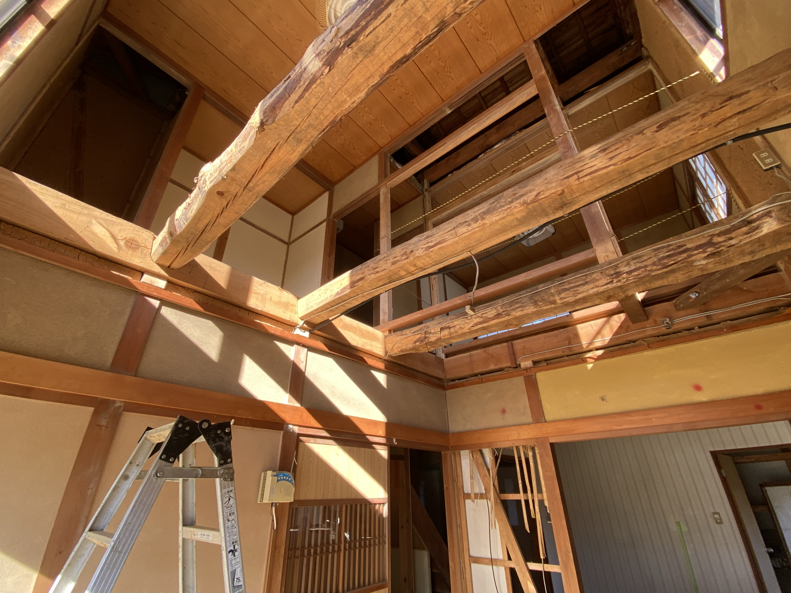

社会人としてのキャリアを経て、学び直しのため ZEN 大学に入学しました。
日々の暮らしの中で見える小さな違和感やなぜ？をデータで読み解き、より良い選択や未来につなげることに関心があります。
統計学を軸に、データサイエンス領域のスキルを再構築中です。
Webアプリケーション開発は10年以上のブランクがあるので初学の心持ちで取り組んでいます。
| データ分析 | 統計・データ前処理・可視化・BIツール、R |
|---|---|
| ビジネススキル・コミュニケーション・マネジメント | 図解化・要点整理・プレゼンテーション作成、交渉・調整力、チームビルディング |
| 個人特性・働き方スキル |
自己管理（時間管理・タスク管理）、文章力（レポート・要約）、 適応力、継続学習力、複数プロジェクトの並行実行力 |
| 生活・実務系スキル |
DIY／木工（棚・テーブル制作）、料理・食材研究、 農作業（米作り・地域食材）、地域連携プロジェクト参画 |
| 資格・免許 |
情報処理技術者、ITパスポート、統計検定2級、 MCSE（旧資格）、その他データ系資格を学習中 |
現在取り組んでいる・これから形にしたいプロジェクト。
ご連絡はこちらへ。
学歴・職歴・活動歴。
| 1999 年 | システムインテグレータとしてキャリアを開始。Webアプリケーション、EC（BtoB）案件を担当。 |
|---|---|
| 2011 年 | 独立。DX導入・データ活用支援、システムパフォーマンスの性能評価・分析・改善提案サポートを中心に活動。 |
| 2020 年〜 | 自治体案件や地域プロジェクトへの参加が増え、一次産業・コミュニティの課題に関心を深める。 |
| 2025 年 | ZEN大学入学。データサイエンス・統計学を再体系化しながらスキルを再構築中。 |